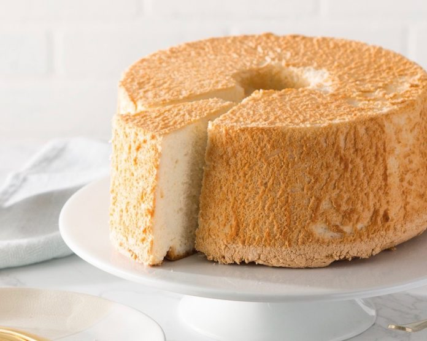

Angel Food Cake

Basic angel food cake
For a cozy afternoon and to eat together with a warm coffee, a delicious Angel Food Cake made in home
Ingredients
- Granulated Sugar
- Cake Flour
- Salt
- Egg Whites
- Cream of Tartar
- Vanilla Extract
Steps
- Pulse the granulated sugar into superfine sugar. Use a food processor or blender.
- Set 1 cup of the superfine sugar aside. You'll add it to the egg whites.
- Add cake flour and salt to food processor. Pulse them with the remaining sugar. This aerates the dry ingredients.
- Beat egg whites and cream of tartar together. Beat on medium-low speed until foamy.
- Slowly add 1 cup of superfine sugar. Turn the mixer up to medium-high and pour in the superfine sugar you set aside.
- Beat into soft peaks. Whip the egg whites, cream of tartar, and superfine sugar into soft and lofty peaks. This takes at least 5 minutes. After that, add the vanilla.
- Sift and fold in dry ingredients. In 3 additions, sift and fold in the dry ingredients.
- Pour/spread batter into a tube pan. Do not grease the tube pan. Greasing the pan causes the batter to slip down the sides, preventing it from properly rising. If you already greased it, wash and wipe it completely clean.
- Bake at 325°F (163°C). A higher temperature won't properly cook the cake.
- Cool upside down on a wire rack. If cooled upright, the cake's own weight will crush itself. Cool it upside-down on a cooling rack so it holds its shape and air can reach it.
- Run a thin knife around the edges to release. Tap the pan on the counter a few times to help loosen the cake, too.
- Slice with a serrated knife. A regular sharp knife squishes the cake.